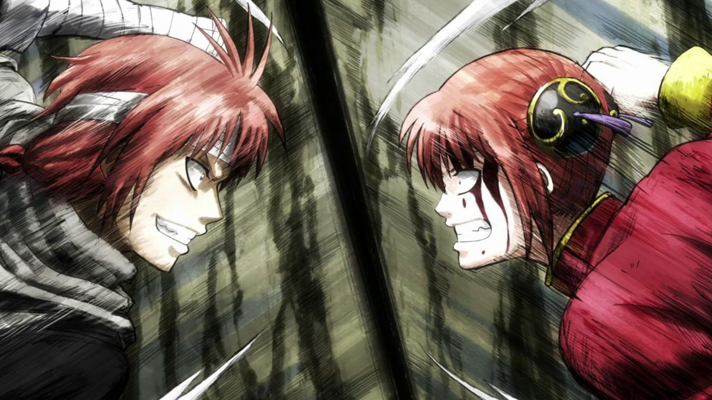

「私はもうお前の知ってる泣き虫の妹じゃないアル。お前の背中を見つめるだけの弱虫の妹じゃないアル。この星が、みんなが教えてくれた。人の強さも、人の弱さも、人の儚さも、人の尊さも。みんなこの侍の星が私に教えてくれた。私はこの地球（ほし）で生まれた神楽アル！誰にも私の故郷（くに）を好き勝手にはさせない！」
In episode 304 of Gintama, we're basically at the climax of the Shogun Assassination Arc. Currently, most of the factions. (Yorozuya, Shinsengumi, Oniwaban, 7th Division Space Pirates Harusame, Kiheitai, Tenshouin Naraku, Tendoshu) are in Iga. The Yorozuya are almost successful in escorting the Shogun out of Iga, but obviously Takasugi and Kamui are in the way. Kagura takes on Kamui, while Gin-chan takes on Takasugi. Kamui is probably one of the strongest characters in Gintama, being the son of the strongest man in the Yato mercenary clan and an immortal Yato woman whose powers are enhanced by Altana. Kamui also has had years of experience space pirating. Kagura is Kamui's younger sister but is more peace-loving. Anyway, I digress.
Kagura was born on Rakuyou, a planet that the Yato migrated to after their home planet, Kouan, was left desolate due to a war. She basically had a sad childhood on Rakuyou, where her mom was constantly sick, being pulled away from her source of power, Kouan. Her father is an alien hunter and is often away, and Kamui often acted out. She was essentially alone when she watched her mother die.
She then found her way to Earth and was adopted by the Yorozuya where she lived a relatively normal and happy teenage life. Understandably, she made lots of friends during her time on Earth and learned a lot from them. So when she said "I am Kagura of Earth" to Kamui, she really means that her friends on Earth made her who she is and she will protect whoever tries to harm her friends. It is also possible to interpret that as her protecting her home.
Nationalists can probably twist this message and say that it is important to protect your home from foreign "invaders", invaders being immigrants. They will then support their argument by pointing to a superficial reading of crime statistics and then justify their position of wanting immigrants out of their country. They will further point out that the so called "onslaught" of immigrants is threatening their culture and way of life.
Kagura would probably laugh at these nationalists and say, "Do you think I am interested in destroying your culture? I am too busy eating sukonbu, playing with Sadaharu and chasing Gin-chan for my wages!" She would probably also be open to learning from other people. Keep in mind, Kagura IS an immigrant on Earth. She adopted many Earthly customs, i.e. understanding the frailty and fickleness of humanity, Bushido, but still retains her Yato-ness (usually to hilarious effect, re: her appetite).
Culture is ever evolving, anyway. Nationalists often wrongly interpret immigrants as villainous. I guarantee most immigrants aren't trying to destroy the natives' livelihoods for shits and giggles. They're just trying to live their lives too and both probably have a lot in common. They shouldn't be attacked for just existing. Kagura would definitely not feel the need to protect her home from people who are just existing. More importantly, she would try to be friends with them and understand how their way of life differs. Subsequently, she would protect her friends. Kagura learns a lot from Gin-chan. He isn't a fan of any government and can't care less if it topples or if it stands, except if it threatens his friends, a hodge-podge of weirdos who congregated from all over space in Edo. I think we can take some lessons from this. We can stop villainizing or othering people unlike ourselves and try to understand who they are so as to not create more resentment. By extending this olive branch, others will try to understand who we are too. Hopefully, this would lead to less conflict.
Also, as the Shogun Assassination arc progresses, everyone realizes they're played by the "heavens",i.e. Tendoshu and Tenshouin Naraku. The heavens essentially manipulated the 7th Division Space Pirates and Kiheitai into supporting a Hitotsubashi shogun candidate, only for the shogun candidate to throw them away when it was convenient for him, since the Tendoshu and Tenshouin Naraku are powerful and can guarantee his safety. Can you see where this analogy is going? We keep falling for politicians, media bigwigs, corporations and billionaires sowing hatred in all factions to distract us from the real problem. Immigrants are constantly used as scapegoats for cost of living crises, insufficient social services and welfare, lack of housing, queues for services, etc. Does everybody not pay tax? Oh wait, billionaires definitely don't. Large corporations also have armies of lawyers to take advantage of tax loopholes. Meanwhile, both regular natives and immigrants don't have the ability to exploit loopholes so retain the entire tax burden.
DISCLAIMER: All thoughts are my own.